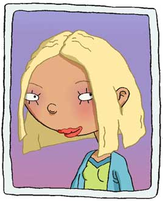

|
 |
Lightyears ahead of her peers in the cosmetic application skill-set, Courtney Gripling takes her role as Most Popular Girl very seriously.
Courtney prides herself on her diplomatic handling of losers.
Now Ginger Foutley has become the latest experiment in Courtney's puppet show.
Can Courtney Gripling pluck a total "nobody" from the dregs of everyday life and make her a Popular Girl? She intends to find out.
But practical joke aside, Courtney's intrigue with Ginger is real.
Courtney is envies the rock-solid friendship that Ginger seems to share with her friends and is baffled by her ethics.
Courtney is always searching for to find Ginger’s "price"—what it will take for her to sell her friends out or compromise what she claims to stand for.
But she keeps coming up empty.
FYI-- Courtney can juice a favor out of absolutely anyone.
|